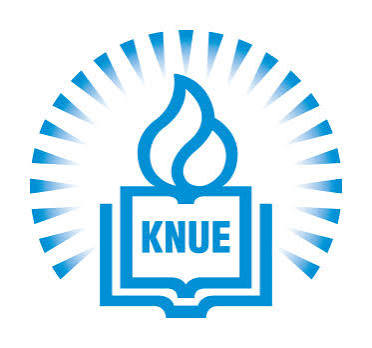
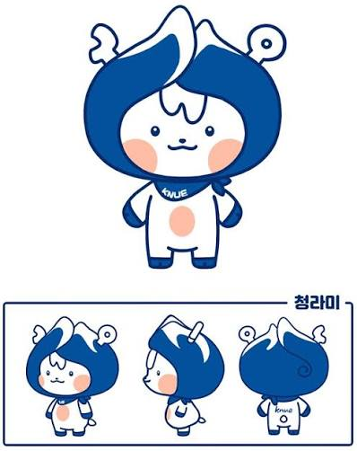

통합 요약
- 쓰기 교육은 지식 전달을 넘어 관점 협상, 선택의 이유 설명, 결과에 대한 책임의 과정으로 이동하고 있습니다.
- AI는 정답 생산자가 아니라 표현을 돕고 검토할 대상을 제공하는 비계로 재위치됩니다.
- 완성 결과물만으로는 충분하지 않으며, 초안·수정 흔적·대화 기록·성찰 메모 같은 과정의 증거가 중요하게 다뤄집니다.

한국교원대학교 국어교육과_최숙기교수님연구실기조강연 1편과 발표문 12편의 핵심 논의를 요약 중심으로 정리한 페이지입니다.
기존 웹의 내용을 단순화하여, 첫 화면은 간단히 두고 상세 내용은 이 페이지에서 확인하도록 분리했습니다.

문화 교육, 설화 읽기, 헌법 토론 등에서 서로 다른 관점을 다시 구성하고 비교하는 활동이 핵심으로 제시됩니다.
학습자가 무엇을 선택했고 왜 그렇게 판단했는지 설명할 수 있는지가 중요합니다.
수정 이유, 공동저술 기록, 요약 비교, 성찰 일지 등이 학습 변화의 자료가 됩니다.
국제교류와 세계시민교육 정책을 분석하며, 단순한 체험이 아니라 공동문제 탐구와 공동저술로 이어져야 한다는 점을 강조합니다.
AI 리터러시와 상호문화교육을 결합한 수업 모형을 제안하며, 학습자·AI·동료의 역할을 구분해 설계합니다.
한국어 연구계획서에서 내용·수사·형식·과정 지식이 어떻게 나타나는지 분석하고, AI 활용 가능 지점을 짚습니다.
자기표현 글쓰기에서 정서 변화와 의미 재구성의 가능성을 분석합니다.
AI 리터러시 자기인식과 쓰기 효능감의 관련성을 검토하면서도, 높은 인식이 곧 책임 있는 수행을 보장하지는 않는다고 봅니다.
자율성·유능성·관계성이 쓰기 정서와 어떤 관계를 가지는지 경험표집 자료로 살핍니다.
인생연대표와 성찰 에세이 활동을 통해 정체성 인식의 변화를 탐색합니다.
외국인 유학생의 기말보고서를 분석하여 문화지식 확장과 자기 문화 기준의 상대화 양상을 살핍니다.
외국인 학습자가 전통 텍스트를 현대적 가치와 자문화 서사로 재맥락화하는 양상을 보여 줍니다.
미래세대 보호 쟁점을 둘러싼 수업 설계를 제안하며, 토론의 이견이 최종 과제에서도 존중되어야 함을 강조합니다.
다중언어 아동의 창작 활동에서 자기이해와 능동성의 변화를 단일 사례로 보여 줍니다.
타자화가 만들어지는 방식을 분석하고, 시점과 결말을 바꾸어 쓰는 교육 모형을 제안합니다.
LLM 요약을 정답이 아니라 검토할 가설로 보고, 원문과 비교하며 의미 평탄화를 점검하는 읽기 모형을 제안합니다.